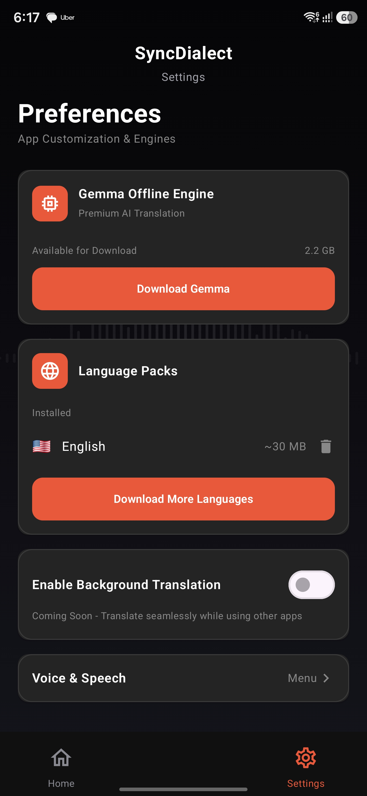

Uncompromising Capabilities
Designed for professionals, travelers, and businesses who require absolute reliability in any environment.




SyncDialect leverages the power of Gemma 2B and Google ML Kit to deliver instantaneous, highly accurate voice translation entirely offline. Absolute privacy, without compromising performance.
Get it on Google PlayDesigned for professionals, travelers, and businesses who require absolute reliability in any environment.

SyncDialect is engineered from the ground up using state-of-the-art native Android tooling.
On-device translation inference
Contextual language processing
Reactive, declarative UI architecture